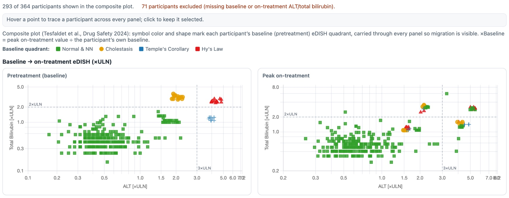

gsm.safety release review 2026-08-22
What v1.2.0 corrects, annotated
gsm.safety's composite liver view has been reading some participants' own baseline as if it were an on-treatment peak. It cannot any more. This release swaps the chart library under all eleven widgets from safety.viz v1.4.0 to v1.7.0, where the rule was corrected, and adds two charts that had no R binding at all. Everything below is a run performed for this page on 2026-08-22 — both bundles, the same data, the same widget code.
2 participants leave the plot
9 plotted peaks move, none upward
0 quadrant classifications change
candidate gs#68, release/v1.2.0 → main
The same chart, drawn by the old bundle and the new one
Both captures below come from one report file. The widget code, the settings and all 57 929 rows of the example data are byte-identical between them — the two copies differ only in which safety.viz.js they load. Read the grey line above each chart pair: it is the module's own count of who made it into the plot.


What the difference is
A participant's on-treatment peak used to be the largest value recorded after study day zero. For a participant whose earliest liver record is not on day zero, that rule kept their baseline record in the on-treatment set — so their own starting value could be reported as their peak, and their peak could never come out below baseline. The rule is now: on-treatment is every record that is not the baseline record.
The two participants who leave the plot each have exactly one liver measurement. Under the old rule that single record served as both their baseline and their peak.
| Composite eDISH view | safety.viz 1.4.0 | safety.viz 1.7.0 |
|---|---|---|
| Participants plotted | 295 | 293 |
| Participants excluded | 69 | 71 |
| On-treatment: Normal & NN | 248 | 246 |
| On-treatment: Hy's Law | 13 | 13 |
| On-treatment: Temple's Corollary | 19 | 19 |
| On-treatment: Cholestasis | 15 | 15 |
No participant changes quadrant. The Normal & Not-Notable count falls by two because the two participants who leave the plot were being counted there. Both halves matter: a reader checking the quadrant counts against the chart would find them moved, and a reader asking whether anyone's clinical classification changed would find that nobody's did.
Why it matters
eDISH is read by eye. A point that sits at its own baseline is indistinguishable from a point that genuinely peaked there, and a participant who improved on treatment could not be drawn below the diagonal at all. On this data nobody crosses into Hy's Law because of it — but that is a property of this study, not of the rule.
The same corrected reduction feeds the migration view and the new ALT waterfall. The plain eDISH scatter uses a different per-record path and is unaffected.
Try it
- Open the hep-explorer demo on the safety.viz site — it runs the corrected bundle.
- Choose Composite plot (baseline-referenced) from the View control.
- Read the count line above the charts, then compare it with the capture on the left.
Why a baseline became a peak, in the data itself
The example data records a study day for every measurement. These are every ALT record the three affected participants have — read out of the package's own ExampleData("adbds") on 2026-08-22, nothing else selected or filtered.
| Visit | Study day | ALT (U/L) | ULN | ×ULN | Old rule | New rule |
|---|---|---|---|---|---|---|
| Unscheduled 1.1 | 1.1 | 43 | 43 | 1.0000 | counted as on-treatment | baseline |
| Week 2 | 4.0 | 15 | 43 | 0.3488 | on-treatment | on-treatment |
There is no day-zero record, so the baseline resolves to the day-1.1 measurement. Because 1.1 is after day zero, the old rule kept that same record in the on-treatment set and reported the peak as 1.0000 ×ULN — the participant's own starting value. The peak is 0.3488 ×ULN, and this participant improved rather than peaked.
| Participant | Visit | Study day | ALT (U/L) | ×ULN | Old rule | New rule |
|---|---|---|---|---|---|---|
| 01-703-1197 | Unscheduled 1.1 | 1.1 | 18 | 0.5625 | baseline and peak, both 0.5625 | baseline only — no on-treatment record |
| 01-708-1236 | Unscheduled 1.1 | 1.1 | 13 | 0.4062 | baseline and peak, both 0.4062 | baseline only — no on-treatment record |
Total bilirubin behaves the same way for both: one record, serving as its own peak. A participant with no measurement after baseline has no on-treatment peak to plot, and is now counted among the excluded rather than drawn at their starting position.
How far this reaches
- 24 of the 318 participants carrying liver measurements have no day-zero record. Those 24 are exactly the population the two rules treat differently.
- Of the 24, eleven are visible in the composite view: nine whose peak moves and two who leave it. The rest already had their baseline outranked by a later value, so both rules pick the same peak.
- The count of 71 excluded is against all 364 participants in the dataset. 46 of them carry no liver measurements at all; among the 318 who do, the drop goes from 23 to 25.
The eleven participants, named
Read out of each bundle's own reduction — the function whose return value the composite view hands to the chart — for the same 364 participants. Values are peak on-treatment, in multiples of the upper limit of normal.
| Participant | Peak ALT was | is now | Peak bilirubin was | is now | Quadrant |
|---|---|---|---|---|---|
| 01-701-1341 | 1.0000 | 0.3488 | 0.4071 | 0.4071 | unchanged |
| 01-702-1082 | 1.1562 | 1.0938 | 0.4886 | 0.4886 | unchanged |
| 01-703-1096 | 0.3438 | 0.3125 | 0.3257 | 0.3257 | unchanged |
| 01-703-1100 | 0.5625 | 0.5312 | 0.6514 | 0.4071 | unchanged |
| 01-704-1008 | 0.5000 | 0.4688 | 0.7329 | 0.7329 | unchanged |
| 01-705-1349 | 1.2188 | 1.2188 | 1.3029 | 1.1400 | unchanged |
| 01-708-1348 | 0.4688 | 0.4375 | 0.4071 | 0.4071 | unchanged |
| 01-709-1301 | 1.8529 | 1.8529 | 0.4886 | 0.4071 | unchanged |
| 01-711-1012 | 0.4706 | 0.4706 | 0.4071 | 0.3257 | unchanged |
| 01-703-1197 | 0.5625 | not plotted | 0.3257 | not plotted | leaves the plot |
| 01-708-1236 | 0.4062 | not plotted | 0.3257 | not plotted | leaves the plot |
Nine peaks move and not one of them rises. Every other participant's plotted position is identical between the two bundles, which is the other half of the claim worth checking: the rule change is confined to the participants it was meant to reach.
What is being shipped is what was measured
- The bundle vendored in this release hashes to
ecd740ff…, and the bundle the public safety.viz demo serves today hashes to the same value — checked by downloading it while writing this page. - That bundle contains the corrected identity check once. The v1.4.0 bundle gsm.safety ships today contains it zero times.
- Both report files used for the captures are the same 6 984 049 bytes and differ only in the name of the directory they load the library from.
The hepatic ALT waterfall and the KDIGO nephrotoxicity explorer
Both existed in the JavaScript library and had no R binding. Both captures below were produced by running the package's own report workflows on 2026-08-22 with the release's code and the release's bundled example data.

Widget_HepWaterfall() on the synthetic abnormal-baseline cohort: 58 of 80 participants plotted, 22 excluded for abnormal baseline bilirubin per the source paper's Table 1, seven marked as developing new-onset jaundice. The chart exists for trials where a normal-baseline eDISH cannot be formed at all.
Widget_NepExplorer(): 276 participants staged, 24 that could not be plotted named rather than dropped silently, and a summary table that says in words that its first two column pairs are separate marginal distributions rather than a cross-tabulation.Both are marked provisional upstream, and the widgets carry that through
The waterfall renders behind a prototype banner and the nephrotoxicity explorer is marked experimental pending clinical confirmation of the KDIGO staging ladder. That is the chart library's own labelling, visible on the capture, and wrapping them in R does not promote them.
The part that outlives the release
Eleven of safety.viz's thirteen renderers now have an R widget, and a check runs weekly against the latest safety.viz release: a renderer with no widget fails it unless a deferral names a filed requirement. A deferral that cites nothing is refused, so falling behind quietly stops being available.
The two still unwrapped are the participant profile and the time-to-event chart. Both need two datasets where the widget contract carries one, which is a design question rather than a missing wrapper.
Try them
- The ALT waterfall demo — drag the jaundice threshold and watch the green bars change.
- The KDIGO explorer demo — click a point in a stage zone for that participant's creatinine records.
- The eDISH demo — the chart this release corrects.
Reading this page
What produced the numbers
- gsm.safety 1.2.0, built from
release/v1.2.0at4a436ce, and gsm.safety 1.1.0 at thev1.1.0tag for the older bundle. - gsm.core 1.3.1 and gsm.mapping 1.1.6, built from the Gilead-BioStats
mainbranches into a scratch library — the same versions this package'sRemotesresolve to in CI. Both are byte-identical to their release tags, checked while writing this page. - R 4.3.3, Chromium via Playwright, on 2026-08-22. Every figure comes from one of those runs; nothing is quoted from the release notes.
Repeat the comparison from a clean checkout. The second step is the whole method: build the report once, then give the copy the older library.
# the chart the release corrects, from the package's own workflow Rscript -e 'lW <- yaml::read_yaml(system.file("workflow","4_modules","hep_explorer.yaml", package="gsm.safety")); w <- gsm.safety::Widget_HepExplorer(gsm.safety::ExampleData("adbds"), lW$meta$lSettings); htmlwidgets::saveWidget(w, "after/hep_explorer.html", selfcontained = FALSE)' # the same report, drawn by the bundle gsm.safety ships today cp -R after before mv before/hep_explorer_files/safety-viz-1.7.0 before/hep_explorer_files/safety-viz-1.4.0 cp <v1.1.0>/inst/htmlwidgets/lib/safety.viz-1.4.0/safety.viz.js \ before/hep_explorer_files/safety-viz-1.4.0/safety.viz.js sed -i '' 's|safety-viz-1\.7\.0|safety-viz-1.4.0|g' before/hep_explorer.html # open both, choose the composite view, read the count line above the charts
Also in the release, not shown here
- The bundle moves for all eleven widgets, not only the liver ones — participant-profile drill-down on six charts, draggable eDISH cut-lines, study-day playback, a log-base picker, axis-limit prefill.
- Three changes could move a value on other data and provably do not here: below-detection-limit imputation (nothing imputed on this data), a new treatment-arm column candidate (this data carries none), and a QT example-data rederivation already in the package.
- The parity guard: a declared library version in
DESCRIPTION, an offline test keeping the declaration, the vendored bundle and every binding in agreement, and a weekly check against the latest safety.viz release.
One thing this page cannot show you
- The package's own documentation site is stale at v1.0.0 — last built on 2026-07-23 — because four of its workflows have been failing at startup since before this branch existed (gs#55). That is open, milestoned, and not fixed by this release.
- So the two new widgets have no published R reference page yet. The captures above are the release's code running, which is the part that matters for the decision; the reference pages follow when #55 is diagnosed.
Where this fits
This page is the review surface for gs#68, which promotes release/v1.2.0 to main and tags v1.2.0. gsm.safety is a clinical repo: nothing reaches main without your review, and the release notes publish from NEWS.md on the tag.
It is the first of two candidates. The second, gs#69, contains this one and has to merge after it.
The rest of the candidate
- gs#51 — the increment, with the measurement this page re-ran independently
- safety.viz#91 — the upstream correction
- The v1.3.0 demo — the census release stacked on top of this one